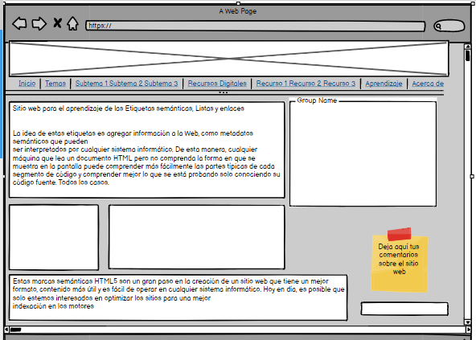

introducción y teoría sobre Etiquetas semánticas, Listas y enlaces
Resumen
Estas marcas semánticas HTML5 son un gran paso en la creación de un sitio web que tiene un mejor
formato, contenido más útil y es fácil de operar en cualquier sistema informático. Hoy en día, es
posible que solo estemos interesados en optimizar los sitios para una mejor indexación en los motores
de búsqueda, pero ellos sentarán las bases para un ecosistema web más saludable en el futuro.
Cita APA: Beati, H. (2015). HTML5 y CSS3 para diseñadores (Spanish Edition) (1st ed.). Marcombo.
